Publications
-
12. Aaliyah Z. Dookhith, Sanat K. Kumar, and Neil D. Dolinski. "Towards healable double networks: structure-dynamics relationships in orthogonal interpenetrating dynamic networks." In preparation.
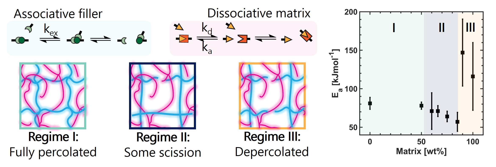
-
11. Aaliyah Z. Dookhith, Zubin Kumar, Sanat K. Kumar, and Neil D. Dolinski. "Improving the mechanical recycling of polyolefins using intrinsically dynamic polymers." In preparation.
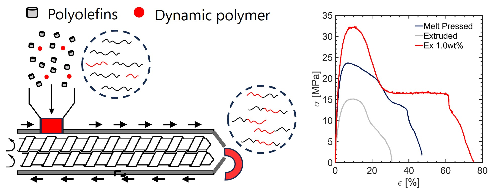
-
10. Zidan Zhang, Jakub Krajniak, Aaliyah Z. Dookhith, Han Zhang, Yuan Tian, Harnoor S. Sachar, Nico Marioni, Tyler J. Duncan, Jun Liu, Gabriel E. Sanoja, and Venkat Ganesan. "Fracture Behavior of Monodisperse and Polydisperse Polymer Networks: Effects of Topology and Strand-Length Dispersity." Macromolecules, 2025. DOI
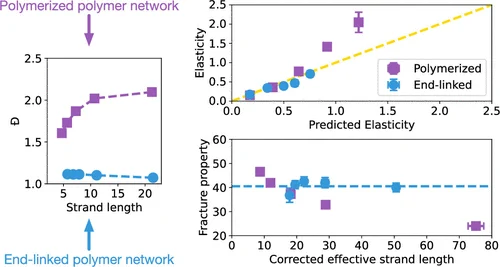
-
9. Aaliyah Z. Dookhith, Zidan Zhang, Venkat Ganesan, and Gabriel E. Sanoja. "Designing soft and tough multiple-network elastomers: Impact of reversible radical deactivation on filler network architecture and fracture toughness." Soft Matter, 2025, 21, 4029–4042. DOI
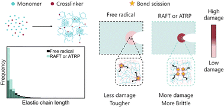
-
8. Zidan Zhang, Jakub Krajniak, Aaliyah Z. Dookhith, Yuan Tian, Harnoor S. Sachar, Nico Marioni, Tyler J. Duncan, Jun Liu, Gabriel E. Sanoja, and Venkat Ganesan. "Topology and Mechanical Properties of Polymer Networks Formed under Free Radical and Atom Transfer Radical Polymerizations." Macromolecules, 2025, 58(6), 3168–3187. DOI
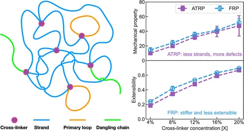
-
7. Aaliyah Z. Dookhith, Zidan Zhang, Venkat Ganesan, and Gabriel E. Sanoja. "Impact of Reversible Deactivation Radical Copolymerizations (RDRPs) on Gelation, Phase Separation, and Mechanical Properties of Polymer Networks." Macromolecules, 2024, 57(18), 8698–8711. DOI
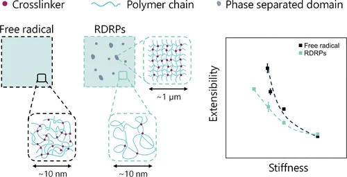
-
6. Mahsa Ebrahimi, Mariana Arreguin-Campos, Aaliyah Z. Dookhith, Ana Aldana, Nathaniel A. Lynd, Gabriel E. Sanoja, Matthew B. Baker, and Louis M. Pitet. "Tailoring network topology in mechanically robust hydrogels for 3D printing and injection." ACS Applied Materials & Interfaces, 2024, 16(19), 25353–25365. DOI
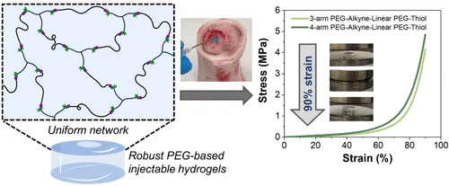
-
5. Mariana Arreguín-Campos, Mahsa Ebrahimi, Aaliyah Z. Dookhith, Nathaniel A. Lynd, Gabriel E. Sanoja, Ana A. Aldana, Matthew B. Baker, and Louis M. Pitet. "Architectural differences in photopolymerized PEG-based thiol-acrylate hydrogels enable enhanced mechanical properties and 3D printability." European Polymer Journal, 2024. DOI
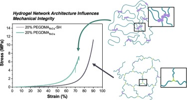
-
4. Aaliyah Z. Dookhith, Nathaniel A. Lynd, and Gabriel E. Sanoja. "Tailoring Rate and Temperature-Dependent Fracture of Polyether Networks with Organoaluminum Catalysts." Macromolecules, 2023, 56(1), 40–48. DOI
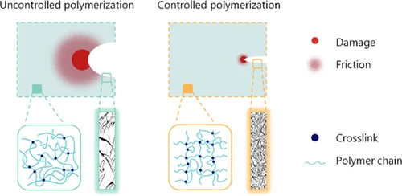
-
3. Aaliyah Z. Dookhith, Nathaniel A. Lynd, Costantino Creton, and Gabriel E. Sanoja. "Controlling Architecture and Mechanical Properties of Polyether Networks with Organoaluminum Catalysts." Macromolecules, 2022, 55(13), 5601–5609. DOI
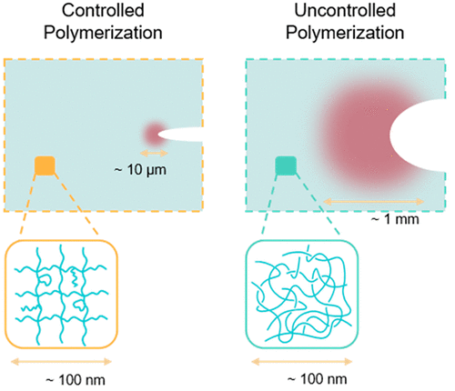
-
2. Daniela E. Blanco, Aaliyah Z. Dookhith, and Miguel A. Modestino. "Controlling Selectivity in the Electrocatalytic Hydrogenation of Adiponitrile through Electrolyte Design." ACS Sustainable Chemistry & Engineering, 2020, 8(24), 9027–9034. DOI
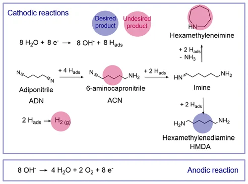
-
1. Daniela E. Blanco, Aaliyah Z. Dookhith, and Miguel A. Modestino. "Enhancing the Selectivity and Efficiency in the Electrochemical Synthesis of Adiponitrile." Reaction Chemistry & Engineering, 2018, 4(1), 8–16. DOI
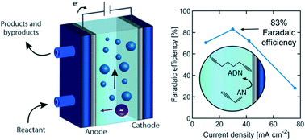